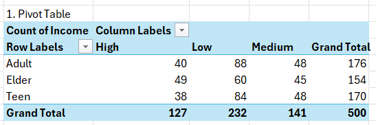
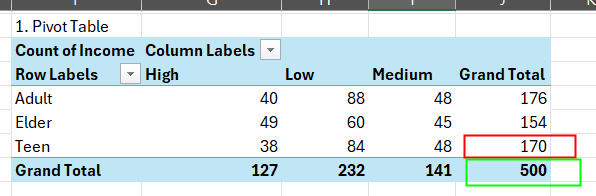
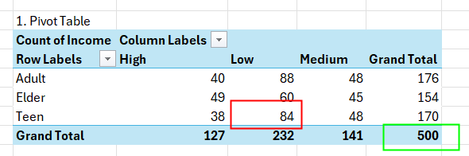
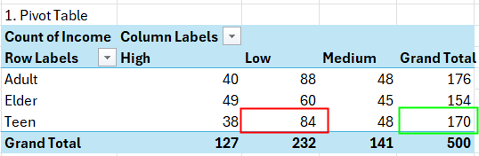

Probabilistic Reasoning
Pendahuluan
Probabilistic Reasoning adalah metode yang digunakan untuk mengatasi ketidakpastian dalam pengambilan keputusan. Metode ini memungkinkan kita untuk menggambarkan dan menganalisis situasi di mana kita memiliki informasi yang tidak lengkap atau tidak pasti.
Contoh Kasus
Gunakan template di file berikut: Template.xlsx, lihat di page “Probabilistic Reasoning”
Berdasarkan data di atas, tentukan berapa kemungkinan untuk: 1. Seorang “Teen” memiliki income “High” dari semua populasi? 2. Seorang “Elder” memiliki income “Low” dari semua orang “Elder”?
Hal itu dapat dihitung di Excel menggunakan cara seperti berikut:
Pivot Table untuk data gender dan income. Pastikan hasilnya seperti ini

Simple Probablities
Untuk menghitung kemungkinan sebuah data, kita bisa menggunakan rumus:
\[P(A) = \frac{{\text{{Jumlah kasus yang memenuhi kondisi A}}}}{{\text{{Jumlah kasus total}}}}\]Contoh: Untuk menghitung kemungkinan data “Teen” dari semua sample, bagi total “Teen” (merah) dengan Grand Total (hijau)

Joint Probablities
Jika kita ingin menghitung kemungkinan P(A & B), gunakan rumus berikut:
\[P(A \cap B) = \frac{{\text{{Jumlah kasus yang memenuhi kondisi A dan B}}}}{{\text{{Jumlah kasus total}}}}\]Contoh: untuk menghitung kemungkinan Teen yang memiliki Low Income, bagi jumlah “Teen” dan “Low Income” (merah) dengan Grand Total (hijau)

Conditional Probabilities
Jika kita ingin menghitung kemungkinan P(A | B), gunakan rumus berikut:
\[P(A | B) = \frac{{\text{{Jumlah kasus yang memenuhi kondisi A dan B}}}}{{\text{{Jumlah kasus yang memenuhi kondisi B}}}}\]Contoh: untuk menghitung kemungkinan jumlah Teen yang memiliki Low Income dari semua Teen, bagi jumlah Teen yang memiliki Low Income (merah) dengan jumlah Teen (biru)
